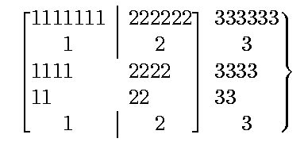
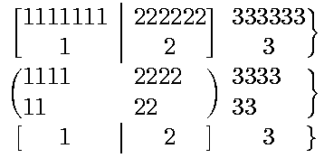
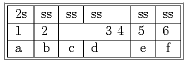
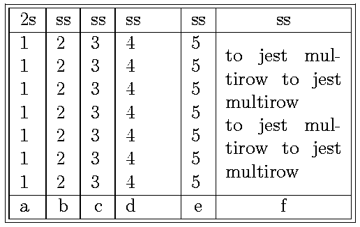
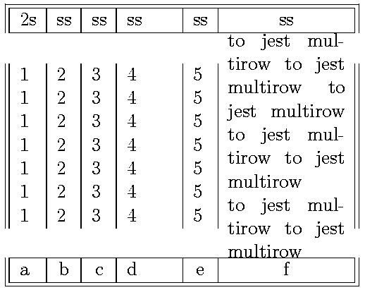
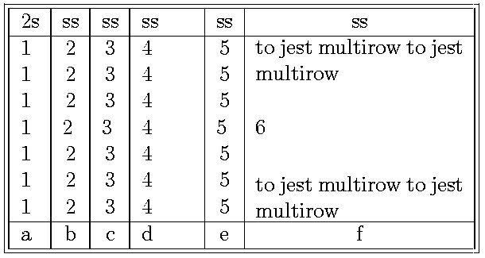
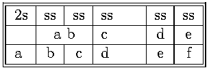
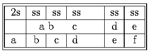
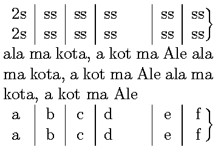

blkarray
Pakiet zawiera makroinstrukcje u³atwiaj±ce sk³ad tabel;
zawiera w sobie polecenia analogiczne jak pakiety
hhline (rozszerzone),
array i
multirow.
Pakiet definiuje ¶rodowisko blockarray zastêpuj±ce ¶rodowiska
tabular i array (wewn±trz trybu matematycznego zachowuje siê
jak array, a w trybie tekstowym jak tabular).
Postaæ wywo³ania jest podobna jak w przypadku ww. konstrukcji.
\begin{blockarray}{preambu³a}
zawarto¶æ tabeli
\end{blockarray}
lub
\begin{blockarray}[s]{preambu³a}
zawarto¶æ tabeli
\end{blockarray}
gdzie s okre¶la sposób pozycjonowania tabeli wzglêdem
s±siedztwa; mo¿e przyjmowaæ warto¶ci: c -- center (warto¶æ domy¶lna),
b -- dó³ tabeli równo z lini± s±siedni±, t -- góra tabeli
równo z lini± s±siedni±
preambu³a definiuje sposób prezentacji (sk³adu)
poszczególnych kolumn tabeli oraz okre¶la separatory kolumn; mog± siê w niej
znale¼æ nastêpuj±ce oznaczenia:
| l | dosuniêcie tekstu do lewej |
| r | dosuniêcie tekstu do prawej |
| c | centrowanie |
| m{width}
| Definiuje kolumnê o szeroko¶ci
width .
¦rodek celi w tej kolumnie (po³owa jej wysoko¶ci) pokrywa siê
ze ¶rodkiem celi kolumny s±siedniej.
Odpowiednik:
\parbox{width}; tekst jest ³amany
na szeroko¶ci width . |
| p{width} | Równowa¿na:
\parbox[t]{width}.
Pozycjonowanie w/g szczytu celi. |
| b{width} | Równowa¿na
\parbox[b]{width}.
Pozycjonowanie w/g do³u celi. |
| >{macro} | Mo¿e byæ u¿yte przed jednym z
nastêpuj±cych typów: l, r,
c, p, m lub
b.
Polecenie macro bêdzie wykonywane zawsze
przed rozpoczêciem analizy materia³u celi w tak okre¶lonej
kolumnie. |
| <{macro} | Mo¿e byæ u¿yte po jednym z
nastêpuj±cych typów: l, r,
c, p, m lub
b.
Polecenie macro bêdzie wykonywane zawsze
na koñcu materia³u
celi w tak okre¶lonej kolumnie. |
| | | Wstawienie linii pionowej jako separatora kolumn;
odleg³o¶æ miêdzy kolumnami zostanie zwiêkszona
o szeroko¶æ linii (w odró¿nieniu od oryginalnej
definicji tabeli). Mo¿na wstawiæ dwa znaki |
-- separatorem bêdzie linia podwójna (odleg³o¶æ miêdzy
liniami okre¶la parametr \BAdoublerulesep). |
| @{macro} | Mo¿e byæ u¿yte w dowolnym
miejscu preambu³y zamiast separatora (np.: |).
Polecenie macro zostanie wywo³ane miêdzy
kolumnami (kasowana jest normalna
odleg³o¶æ miêdzy kolumnami). |
| !{macro} | Mo¿e byæ u¿yte w dowolnym
miejscu preambu³y zamiast separatora (np.:
|).
Polecenie macro zostanie wywo³ane
miêdzy kolumnami (w odró¿nieniu od
@{...} nie jest kasowana normalna
odleg³o¶æ miêdzy kolumnami). |
| & |
Znak umieszczony przed symbolem
separatora
kolumny (|) powoduje, ¿e w przypadku
u¿ycia polecenia
\BAmulticolumn
nie trzeba w nim powtarzaæ definicji
obramowania celi (w przypadku
u¿ycia makra \BAmulticolumn w pierwszej
kolumnie obramowanie z lewej strony musi byæ
redefiniowane). W przypadku podwójnego obramowania
(||) znak & nale¿y
umie¶ciæ tylko przed pierwszym znakiem
|. |
| ) | dodatkowa kolumna obejmuj±ca
nawiasem ca³± wysoko¶æ tabeli (p. ¶rodowisko block) |
| \} | dodatkowa kolumna obejmuj±ca
nawiasem ca³± wysoko¶æ tabeli (p. ¶rodowisko block) |
| ] | dodatkowa kolumna obejmuj±ca
nawiasem ca³± wysoko¶æ tabeli (p. ¶rodowisko block) |
| ( | dodatkowa kolumna obejmuj±ca
nawiasem ca³± wysoko¶æ tabeli (p. ¶rodowisko block) |
| \{ | dodatkowa kolumna obejmuj±ca
nawiasem ca³± wysoko¶æ tabeli (p. ¶rodowisko block) |
| [ | dodatkowa kolumna obejmuj±ca
nawiasem ca³± wysoko¶æ tabeli (p. ¶rodowisko block) |
| \Left{tekst}{delimiter} |
tekst i delimiter stanowi kolumnê o zerowej szeroko¶ci;
konstrukcja s³u¿y do wstawienia dodatkowego opisu (sk³adanego antykw±) umieszczonego przed
delimiterem (mo¿e nim byæ jeden z nawiasów ([{}])); delimiter obejmuje ca³± wysoko¶æ tabeli (p. block). |
| \Right{delimiter}{tekst} |
tekst i delimiter stanowi kolumnê o zerowej szeroko¶ci;
konstrukcja s³u¿y do wstawienia dodatkowego opisu (sk³adanego antykw±) umieszczonego po
delimiterze (mo¿e nim byæ jeden z nawiasów ([{}])); delimiter obejmuje ca³± wysoko¶æ tabeli (p.
block). |
| \BAenum | dodatkowa kolumna zawieraj±ca numer
kolejny wiersza (szeroko¶æ kolumny jest ustalona na
2em bez wzglêdu czy siê to komu¶ podoba czy nie)
|
| *{n}{parametry} | n-krotne powtórzenie
specyfikacji kolumny np:
*{3}{|c} jest równowa¿ne |c|c|c |
Parametry którymi mo¿na regulowaæ sposób budowania tabeli:
| Polecenie | opis |
|---|
\tabcolsep | po³owa szeroko¶ci odstêpu miêdzy kolumnami
tablicy (domy¶lnie 6pt) |
\BAarrayrulewidth | szeroko¶æ pionowej linii separuj±cej
kolumny (o ile jest u¿ywana -- domy¶lnie
0.4pt) |
\BAdoublerulesep | odleg³o¶æ miêdzy dwoma liniami pionowymi
stanowi±cymi separator kolumn (domy¶lnie 2pt) |
\arraystretch | ,,mno¿nik'' odstêpu miêdzy
wierszami tablicy
(np.
\renewcommand{\arraystretch}{1.5}
zwiêksza odstêp o 50%) |
\BAextrarowheight | dodatkowy odstêp miêdzy liniami (domy¶lnie 0pt) |
\BAextraheightafterhline | dodatkowy odstêp po
poziomej linii oddzielaj±cej |
Uwaga:
W zwi±zku z realizacj± tabeli wystêpuje efekt uboczny ---
blokowane jest przenoszenie wyrazów (hyphenation) dla pierwszego
wyrazu w celi. Efekt mo¿emy wyeliminowaæ
wstawiaj±c pust± przestrzeñ o d³ugo¶ci 0pt na pocz±tku celi
(wykorzystuj±c mo¿liwo¶ci formowania preambu³y tabeli) np.
>{\hspace{0pt}}p{20mm}
Obramowania tabeli
W pakiecie jest zdefiniowane polecenie \BAhhline umo¿liwiaj±ce
uzyskanie ³adniejszych wykoñczeñ tabeli:
Wywo³anie:
\BAhhline{parametry}
na li¶cie parametrów mog± wystêpowaæ nastêpuj±ce symbole:
= | podwójna linia o szeroko¶ci danej kolumny |
" | podwójna linia przerywana o szeroko¶ci danej kolumny |
- | pojedyncza linia o szeroko¶ci danej kolumny |
. | pojedyncza linia przerywana o szeroko¶ci danej kolumny |
~ | brak linii w danej kolumnie (pozwala zast±piæ
dyrektyw± \BAhhline dyrektywê \cline) |
| | linia pionowa przecina (ma priorytet) konstrukcjê poziom± |
: | linia pionowa styka siê z podwójn± poziom± |
# | skrzy¿owanie podwójnych linii |
t | górne wykoñczenie rogu (lewe lub prawe w zale¿no¶ci od
s±siedztwa) |
b | dolne wykoñczenie rogu |
* | powtórzenie sekwencji; np. *{3}{==#} jest równowa¿ne
==#==#==# |
Przyk³ad ilustruje ró¿ne zestawienia po³±czeñ linii poziomych i pionowych
(niekoniecznie poprawnych)
\begin{blockarray}{||cc||c|c||}
\BAhhline{|t:==:t:==:t|}
a & b & c & d\\
\BAhhline{|:==:|~|~||}
1 & 2 & 3 & 4\\
\BAhhline{#==#~|=#}
i & j & k & l\\
\BAhhline{||--||--||}
w & x & y & z\\
\BAhhline{|:==|:==:|}
1 & 2 & 3 & 4 \\
\BAhhline{|:==::=|=:|}
5 & 6 & 7 & 8 \\
\BAhhline{|:="::"|=:|}
9 & 10 & 11 & 12 \\
\BAhhline{||-|.||.|-||}
13 & 14 & 15 & 16\\
\BAhhline{|b:==:b:==:b|}
\end{blockarray}
|  |
Wstawienie materia³u o innej specyfikacji kolumn i delimiterów ((
, {, [ i ], }, ))
Pakiet udostêpnia ¶rodowisko block (i block*)
o nastêpuj±cej postaci wywo³ania:
\begin{block}{preambu³a}
.
.
.
\end{block}
lub
\begin{block*}{preambu³a}
.
.
.
\end{block*}
mo¿e byæ ono u¿yte wy³±cznie wewn±trz ¶rodowiska blockarray
(mo¿e byæ wielokrotnie zagnie¿d¿any)
preambu³a powinna byæ zgodna co do liczby kolumn
ze specyfikacj± kolumn umieszczon± w ¶rodowisku blockarray
(oprócz dostêpnych w niej parametrów, dodatkowo mog± wyst±piæ polecenia
\BAmulticolumn, obejmuj±ce
kilka kolumn tabeli oraz \BAmultirow obejmuj±ce wszystkie
wiersze zawarte w ¶rodowisku block).
¦rodowisko umo¿liwia wstawienie kolumn, które bêd± inaczej
prezentowane ni¿ okre¶la to specyfikacja ¶rodowiska blockarray.
Wszystkie separatory kolumn i kolumny tabeli musz± byæ redefiniowane.
W przypadku u¿ycia konstrukcji nawiasowych w specyfikacji
tabeli wersja ,,bezgwiazdkowa'' ¶rodowiska umo¿liwia zdefiniowanie
innych konstrukcji nawiasowych (lub rezygnacjê z nich). W wersji
,,gwiazdkowej'' specyfikacja konstrukcji nawiasowych jest ignorowana
(pozostaj± w mocy specyfikacje ¶rodowiska blockarray; ró¿nice
najlepiej zilustruje przyk³ad:
\begin{blockarray}{[c|c]c\}}
1111111 & 222222 & 333333 \\
1 & 2 & 3 \\
\begin{block*}{(ll)l\}}
1111 & 2222 & 3333 \\
11 & 22 & 33 \\
\end{block*}
1 & 2 & 3 \\
\end{blockarray}
|

|
\begin{blockarray}{[c|c]c\}}
1111111 & 222222 & 333333 \\
1 & 2 & 3 \\
\begin{block}{(ll)l\}}
1111 & 2222 & 3333 \\
11 & 22 & 33 \\
\end{block}
1 & 2 & 3 \\
\end{blockarray}
|

|
Przyk³ad u¿ycia polecenia \BAmulticolumn wewn±trz preambu³y
¶rodowiska block
\begin{blockarray}{||l|c|c|t{1cm}|c|c||}
\BAhhline{|t:======:t|}
2s & ss &ss &ss &ss&ss\\
\BAhhline{||------||}
\begin{block}{||l|l|\BAmulticolumn{2}{r}|l|l||}
1 & 2 & 3 4 & 5 & 6\\
\end{block}
\BAhhline{||------||}
a & b & c & d & e & f\\
\BAhhline{|b:======:b|}
\end{blockarray}
|

|
U¿ycie konstrukcji \BAmultirow w preambule ¶rodowiska block
wymaga dodatkowego komentarza. Materia³ który ma byæ sk³adany w bloku o
wysoko¶ci wszystkich wierszy ¶rodowiska block mo¿e byæ wprowadzany
w jednym lub kilku wierszach (w tak okre¶lonej kolumnie). Je¿eli jest on
podany w kilku wierszach to jedynym efektem jest zachowanie podzia³u na wiersze
(zapis ,,od nowej linii''), bêdzie on i tak stanowi³ ca³o¶æ, która bêdzie pozycjonowana
wzglêdem ¶rodka wysoko¶ci wszystkich wierszy.
\begin{blockarray}{||l|c|c|t{1cm}|c|c||}
\BAhhline{|t:======:t|}
2s & ss &ss &ss &ss&ss\\
\BAhhline{||------||}
\begin{block}{||l|l|l|l|l|\BAmultirow{1in}||}
1 & 2 & 3 & 4 & 5 & \relax\\
1 & 2 & 3 & 4 & 5 & to jest multirow to jest multirow
\\
1 & 2 & 3 & 4 & 5 & \relax\\
1 & 2 & 3 & 4 & 5 & \relax\\
1 & 2 & 3 & 4 & 5 & to jest multirow to jest multirow
\\
1 & 2 & 3 & 4 & 5 & \relax\\
1 & 2 & 3 & 4 & 5 & \relax\\
\end{block}
\BAhhline{||------||}
a & b & c & d & e & f\\
\BAhhline{|b:======:b|}
\end{blockarray}
|

|
Uwaga! zawarto¶æ kolumn, które nie zawieraj± materia³u wchodz±cego
w sk³ad kolumny musi zawieraæ ,,co¶'' np. materia³ ,,pusty''
(\relax).
Je¶li wysoko¶æ sk³adu materia³u przekracza wysoko¶æ wszystkich wierszy nie
wp³ywa to
na wysoko¶æ delimiterów kolumn, pojawia siê efekt widoczny w poni¿szym
przyk³adzie
\begin{blockarray}{||l|c|c|t{1cm}|c|c||}
\BAhhline{|t:======:t|}
2s & ss &ss &ss &ss&ss\\
\BAhhline{||------||}
\begin{block}{||l|l|l|l|l|\BAmultirow{1in}||}
1 & 2 & 3 & 4 & 5 & \relax\\
1 & 2 & 3 & 4 & 5 & to jest multirow to jest multirow
to jest multirow to jest multirow to jest multirow \\
1 & 2 & 3 & 4 & 5 & \relax\\
1 & 2 & 3 & 4 & 5 & \relax\\
1 & 2 & 3 & 4 & 5 & to jest multirow to jest multirow \\
1 & 2 & 3 & 4 & 5 & \relax\\
1 & 2 & 3 & 4 & 5 & \relax\\
\end{block}
\BAhhline{||------||}
a & b & c & d & e & f\\
\BAhhline{|b:======:b|}
\end{blockarray}
|

|
Tworzenie nowych typów kolumn
Za pomoc± polecenia \BAnewcolumntype mo¿na tworzyæ nowe typy kolumn.
Sk³adnia polecenia jest nastêpuj±ca:
\BAnewcolumntype{nazwa}{definicja}
lub
\BAnewcolumntype[n]{nazwa}{definicja}
gdzie:
- nazwa jest jednoliterowym okre¶leniem nowego typu
kolumny
- definicja okre¶la sposób sk³adu zawarto¶ci celi w danej kolumnie np:
\BAnewcolumntype{c}{>{\hfil}<{\hfil}}
definiuje kolumnê, w której zawarto¶æ celi jest centrowana
- n jest liczb± parametrów nowej specyfikacji kolumny np:
\BAnewcolumntype[1]{t}{>{\rightskip=0pt plus 1fil\vtop\BA@startpbox{#1}}<{\BA@endpbox}}
definiuje kolumnê analogiczn± do p ale ³aman± w ,,chor±giewkê'' --
parametr okre¶la szeroko¶æ sk³adu. Wersja ulepszona, w której równie¿ pierwszy
wyraz podlega podzia³owi wygl±da nastêpuj±co:
\BAnewcolumntype[1]{x}{>{\rightskip=0pt plus 1fil\vtop\BA@startpbox{#1}\hskip0pt}<{\BA@endpbox}}
£±czenie pól tabeli w kolumnie (w pionie)
Pakiet blkarray udostêpnia polecenie \BAmultirow,
umo¿liwiaj±c± ³±czenie cel tabeli w pionie, podobnie jak pakiet
multirow, sk³adnia wywo³ania jest inna;
wygl±da ona nastêpuj±co:
\BAmulticolumn{szeroko¶æ}{tekst}
Sk³adany materia³ obejmuje ca³± wysoko¶æ tabeli (je¿eli jest u¿yte ¶rodowisko
block to materia³ bêdzie powielony (sic!))
\begin{blockarray}{||l|c|c|t{1cm}|c|c||}
\BAhhline{|t:======:t|}
2s & ss &ss &ss &ss&ss\\
\BAhhline{||------||}
1 & 2 & 3 & 4 & 5 & \\
1 & 2 & 3 & 4 & 5 & \\
\BAmultirow{4cm}{to jest multirow to
jest multirow} \\
1 & 2 & 3 & 4 & 5 & \\
\begin{block}{||l|l|l|l|l|l||}
1 & 2 & 3 & 4 & 5 & 6\\
\end{block}
1 & 2 & 3 & 4 & 5 & \\
1 & 2 & 3 & 4 & 5 & \\
1 & 2 & 3 & 4 & 5 & \\
\BAhhline{||------||}
a & b & c & d & e & f\\
\BAhhline{|b:======:b|}
\end{blockarray}
|

|
Je¿eli chcemy, aby materia³ obejmowa³ jedynie okre¶lon± liczbê wierszy (a nie
wszystkie wiersze) w danej kolumnie to nale¿y u¿yæ konstrukcji block
³±cz±c j± z makroinstrukcj± \BAmultirow (p. u¿ycie konstrukcji
\BAmultirow w preambule ¶rodowiska block).
£±czenie pól tabeli w wierszu (w poziomie)
Podobnie jak w ¶rodowisku tabular mo¿na uzyskaæ efekt po³±czenia
kilku cel tabeli w jedn±, obejmuj±c± kilka kolumn; s³u¿y do tego
makroinstrukcja \BAmulticolumn -- postaæ wywo³ania jest nastêpuj±ca:
\BAmulticolumn{n}{specyfikacja}{materia³}
n -- liczba kolumn, któr± ma obejmowaæ konstrukcja,
specyfikacja -- okre¶lenie sk³adu kolumny, analogicznie jak w
specyfikacji kolumn tabeli. Je¶li \BAmulticolumn
obejmuje pierwsz± kolumnê tabeli specyfikacja musi zawieraæ
definicjê obramowania z lewej strony. Specyfikacjê obramowania z
prawej strony celi mo¿na pomin±æ, je¶li definicja obramowania kolumny zawarta
w specyfikacji tabeli, jest poprzedzona znakiem
&
materia³ okre¶la zawarto¶æ celi i bêdzie sk³adany zgodnie ze
specyfikacja
Przyk³ad:
separator podwójnej celi z prawej strony jest zdefiniowany za pomoc±
znaku &
\begin{blockarray}{||l|c|c&|t{1cm}|c|c||}
\BAhhline{|t:======:t|}
2s & ss &ss &ss &ss&ss\\
\BAhhline{||------||}
& \BAmulticolumn{2}{c}{a b} & c & d & e\\
\BAhhline{||------||}
a & b & c & d & e & f\\
\BAhhline{|b:======:b|}
\end{blockarray}
|

|
W poni¿szej tabeli brak definicji separatora z prawej strony podwójnej celi
\begin{blockarray}{||l|c|c|t{1cm}|c|c||}
\BAhhline{|t:======:t|}
2s & ss &ss &ss &ss&ss\\
\BAhhline{||------||}
& \BAmulticolumn{2}{c}{a b} & c & d & e\\
\BAhhline{||------||}
a & b & c & d & e & f\\
\BAhhline{|b:======:b|}
\end{blockarray}
|

|
Makroinstrukcjê \BAmulticolumn mo¿na u¿ywaæ wewn±trz
preambu³y ¶rodowiska block (oczywi¶cie bez specyfikacji zawarto¶ci
celi; p. przyk³ad).
Wstawienie materia³u nie podlegaj±cego podzia³owi na kolumny
W pakiecie jest zdefiniowane polecenie \BAnoalign umo¿liwiaj±ce
wstawienie tekstu, który nie podlega podzia³owi na kolumny -- zajmie on
szeroko¶æ ca³ej tabeli (mo¿e byæ ono u¿yte wewn±trz ¶rodowiska block). Sk³adnia wywo³ania jest nastêpuj±ca:
\BAnoalign{tekst}
lub
\BAnoalign*{tekst}
Polecenie tworzy ,,dziurê'' w normalnej strukturze tabeli.
Wersja ,,gwiazdkowa'' nie powoduje przerwania ci±g³o¶ci nawiasów
separuj±cych (definiowanych konstrukcjami:
(, {, [ i ], }, ), \Right
i Left) -- niestety z powodu b³êdu wersja ta jest na ogó³
bezu¿yteczna. Ci±g³o¶æ linii pionowych jest zawsze przerywana.
\begin{blockarray}{l|c|c|t{1cm}|c|c\}}
2s & ss &ss &ss &ss&ss\\
2s & ss &ss &ss &ss&ss\\
\BAnoalign{ala ma kota, a kot ma Ale
ala ma kota, a kot ma Ale
ala ma kota, a kot ma Ale}
a & b & c & d & e & f\\
a & b & c & d & e & f\\
\end{blockarray}
|

|
Przypisy w tabelach
W tabelach definiowanych za pomoc± ¶rodowiska blockarray mo¿na
definiowaæ przypisy (za pomoc± standardowego polecenie \footnote)
Standardowo przypisy s± umieszczane bezpo¶rednio
pod tabel± i s± one
numerowane za pomoc± polecenia \fnsymbol. U¿ycie polecenia
\BAtablenotesfalse (zmiana warto¶ci zmiennej logicznej) powoduje, ¿e
przypis bêdzie umieszczony na dole strony (tak jak wszystkie inne przypisy i
z u¿yciem standardowego licznika przypisów).
W typ wypadku, je¶li ¶rodowisko blockarray jest umieszczone wewn±trz ¶rodowiska
table lub figure przypisy nie bêd± prezentowane!).
Wywo³anie makroinstrukcji \BAparfootnotes powoduje, ¿e przypisy
bêd± sk³adane jako jeden akapit (tylko w przypadku \BAtablenotestrue).

 W³odzimierz Macewicz
W³odzimierz Macewicz
Ostatnie zmiany: .